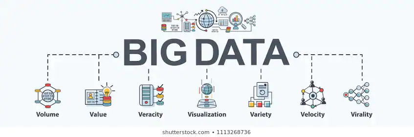

Big data Charasteristics

Links:
- Volume
The amount of data that is generated and processed. The data size defines the importance and possible knowledge,
and whether or not it can be regarded as big data.
- Variety
Data form and character. That lets people who evaluate it use the resulting information effectively.
Big data draws from text , pictures, audio , video; plus the missing parts are filled through fusion of data.
- Velocity
The pace at which the data is produced and processed to meet the growth and development path demands and challenges that exist.
Big data can also be viewed in real time. Big data are generated more continually compared with small data.
The frequency of generation and the frequency of managing, recording, and publishing are two kinds of velocity related to big data.
- Veracity
It is the extended meaning for big data which refers to the quality of data and the value of data.
The consistency of the data collected will vary considerably, affecting the accurate analysis.
- Exhaustive
If the whole network is captured or registered (i.e., {\textstyle n}{\textstyle n}=all) or not.
- Fine-grained and uniquely lexical
The proportion of unique data per item obtained, and whether the item and its characteristics are sufficiently indexed or defined, respectively.
- Relational
If the data collected includes fields of commons that will allow various data sets to be combined, or meta-analysed.
- Extensional
If new fields can be easily inserted or modified in any aspect of the collected data.
- Scalability
If the data size will increase rapidly.
- Value
The utility which the data can extract.
- Variability
It refers to data which shifts in value or other characteristics in relation to the aim they are being generated.